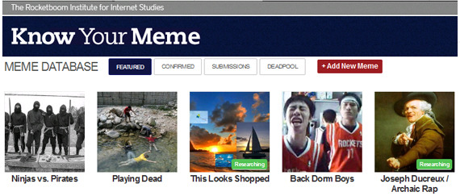
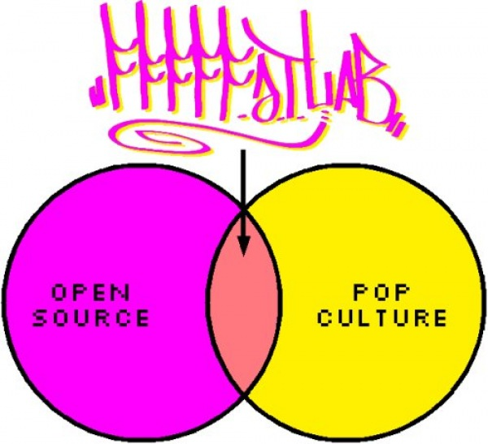

I am an American computer programmer and entrepreneur.
Here is an awkward interview with me:
Contact me via Twitter @jamiew or email "jamie@thisdomain.com"
I write about my work on jamiedubs.com/blog.
I am @jamiew on GitHub and Twitter, jamiedubs on Discord, and jamiedubs on most other public social media.
Please get in touch if you see anything you're into, I am always happy to talk.
I'm the co-founder and CTO of Glif, an "all-prompts, no-code" generative AI sandbox. We make it easy to combine different kinds of AI models into agents and multimedia mini-apps - text, images, audio, video and more.
I serve as a board member with the Helium Foundation, which helps build the Helium peer-to-peer telecommunications network, and the Center For Artistic Activism (C4AA), which trains and advises activists around the world.
From 2010-2016 I was the co-founder and CEO of VHX, a platform for selling movies and TV shows directly to fans. In 2016 we were acquired by Vimeo, and the product is now known as Vimeo OTT. We had the privilege of working with thousands of small businesses, as well as well-known artists like Dave Grohl, Kevin Hart, This American Life, Grace Helbig and more. The company was backed by investors like Union Square Ventures, Comcast Ventures, Lerer Ventures, Chris Sacca, Alexis Ohanian and more.
In 2008, I helped create Know Your Meme, a community-edited database of Internet culture. "Like Wikipedia, but cooler." We also produced a web show where we would dress up in lab coats and explain the stories behind notable memes. Some of my favorite episodes are embedded below. The site was acquired by the Cheezburger Network in 2011, and remains a popular destination for anyone trying to understand wtf their kids are talking about.

In 2010 I won a Primetime Emmy for my work on the crowdsourced movie Star Wars Uncut – "Outstanding Achievement in Interactive Media". We chopped the original Star Wars movie into 15 second pieces and invited the Internet to recreate them, one scene at a time. The project was created by Casey Pugh, my co-founder at VHX.

From 2007 until we shut it down in 2016 I was a member of the open-source art collective FAT Lab (Free Art & Technology), a group of designers, hackers, and activists "releasing early, often and w/ rap music."
I contributed to lots of small and large projects with the group, including Graffiti Markup Language, Google Alarm, Internet Famous Class, occupyinter.net, FuckFlickr, The Kanye Rant Detector, and many more.
Here's the crew with the fake Google Street View car we built in 2015:


I love open-source software and publish as much code as possible on github.com/jamiew
Here is an incomplete list of other projects:
- Scratch Markup Language (ScratchML) (2012)
- Google Alarm (2010)
- Occupy Internet (2010)
- Graffiti Markup Language (GML) (2010)
- JSONView for Chrome (2010)
- 000000book (2009)
- Canvasplayer (2009)
- Quotable Kanye (2009)
- Kanye Studio Pro (2009)
- Kanye Rant Detector (2009)
- Meme Breaks (2008)
- Obama Wikipedia page edits (2008)
- Internet Famous Class (2007-2008)
- Rickroll Database (2007)
- FuckFlickr (2007)
- BIG_RIP.js (2007)
- Breakout USA (2007)
- Product Management Approval Matrix (2007)
Here are some more lists I'm working on:
Here's some videos I've helped make:
Know Your Meme episodes (2007-2010)
Star Wars Uncut (2010)
Empire Uncut (2015)
FAT Lab projects (2007-2015)
000000book - Graffiti Markup Language database (2010)
Occupyinter.net (2012)
Google Alarm (2010)
Meme Breaks (2008)
Obama Wikipedia page edits (2008)
Hard Drive Bombs (2007)
Talks/Presentations
XOXO Festival (2012) - VHX
Vimeo Festival (2011) - "Internet Fame, Easy as 1 2 3"
TEDxSOMA (2010) - Google Alarm
Internet Famous Class on NBC (2008)
VHX (2010-2017)
Animation & art direction by Erica Gorochow:
Animations mostly by Kornhaber Brown with sound design by Mike Rugnetta and Bryan Pugh
0xff00ff
0xffff00
RIP